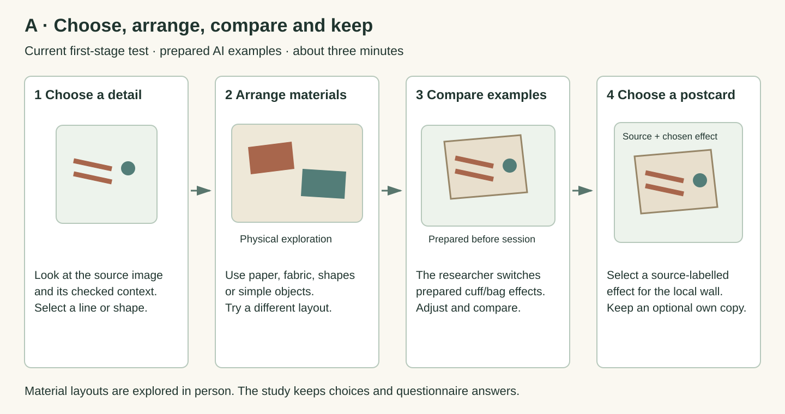

ECS staff or students aged 18 or over. No museum or AI expertise is required.
SECOND-ROUND PROBES · FIRST-STAGE DEVELOPMENTWhat feels authentic
What feels authentic
when AI joins the visit?
Two low-fidelity activities explore heritage patterns, personal expression and cultural understanding.
The immediate study takes place in ECS. Participants try prepared AI examples, make postcards and give anonymous feedback to help choose the next direction.
ERGO 117392 · V1.0 · 21 October 2026 · Recruitment after ethics approval
The wider research question and what “authenticity” means here
How do human–AI interactions shape visitors’ experiences of authenticity in museums and heritage sites?
The two supporting questions ask what visitors draw on for authenticity, and how they negotiate different senses of authenticity when interpreting heritage objects with AI. A and B are focused parts of this larger project.
We examine historical accuracy, resemblance, felt connection, personal voice and another person’s understanding as distinct judgments. The activities show how they relate. The theories help us decide what to notice. Visitors can give their own reasons and feelings. [1] [2] [3] [17]
01 / THE CURRENT FIRST-STAGE TEST
Try A and B, then help choose the next direction
Protocol basis: Probe Development Survey, ERGO 117392, V1.0, 21 October 2026. Recruitment begins after ethics approval.
Try A, then B, about three minutes each. Complete four optional questionnaire questions.
The researcher checks AI content before sessions and manually switches examples or assembles cards during the test.
Anonymous A and B cards join a local study wall. Optional paper copies contain only the participant’s own card.
Purpose: compare the two low-fidelity prototypes, identify useful improvements and choose which direction to develop further. The website explains the research designs. Participants try the prototypes on study equipment. Museum fieldwork is a later development stage.
The session, in order
- Read the information sheet, ask questions and tick consent.
- Try A: choose a source detail, arrange materials and compare prepared cuff/bag effects.
- Try B: write original words, choose a prepared image, then read, reply or clarify on a postcard.
- Complete the four optional questions.
- Check drafts for identifying details and confirm submission. Both cards join the wall.
- Choose whether to take printed copies of your own cards, without others’ replies.
What we keep
- Consent tick and questionnaire answers.
- A: selected source-detail and prepared-image references.
- B: original words, replies, clarifications, source/image references and reply links.
Keep card text and references to existing images. Submitted cards are visible to later participants. Questionnaire answers remain with the research team and authorised audit staff.
How the test is recorded
Data come from the submitted questionnaire and postcard text and references. A’s physical arrangements are not retained. The study excludes names, signatures, contacts, demographics, photographs, screenshots, audio, video, observation notes and interaction logs.
AI content is prepared before the session. Participant writing is kept out of AI services. The researcher openly explains the manual simulation.
The four questionnaire questions
- Which prototype should we develop further for a museum experience? Tick one.
- A: As you arranged materials and compared the source with AI cuff/bag previews, what kept or changed what felt authentic? Why?
- B: How did your words, the AI image and others' replies affect what you expressed or understood across cultural perspectives?
- Why did you choose that option, and what would you improve, including the postcard wall or take-away?
Question 1 options: A, B, Both equally, Neither, Not sure.
How the feedback informs the next design
Summarise preferences and reasons, then themes about authenticity, cultural expression, understanding, AI images and improvements. Read B replies alongside the relevant card. Exclude labelled AI starters from participant evidence. Use the findings to choose and refine a direction.
This first stage gathers responses to low-fidelity examples. A later working-AI study can specify how to capture moment-by-moment interaction and evaluate live generation or translation.
Participation and storage
Participants can skip activities or questions, stop, or discard drafts before submission. After anonymous submission, cards and forms cannot be located for removal. Check the cards for identifying details before submission.
The wall runs locally on study equipment without accounts or public access. Lock paper forms and use University-approved secure UK digital storage. Retain data for at least 10 years after collection or publication, whichever is later, then review disposal.
02 / THE TWO FIRST-STAGE ACTIVITIES
Two ways to explore the same research area
Each participant tries A then B. Prepared AI content, manual simulation, a local postcard wall and the questionnaire define this first stage.
DIRECTION A · Developed from Probe 2
Make with AI on My Cuff or Bag
Choose a source detail, arrange materials, compare prepared AI effects on a cuff or bag picture, then select a postcard.
Material action & authenticityAbout 3 minutes in this testPrepared AI content
The focused research question
During material arrangement and AI cuff/bag previews, how do participants maintain or revise their sense of authenticity?
A connects three things: a detail from a named heritage object, a material arrangement, and an AI adaptation shown on an everyday-item picture. The questionnaire asks what kept or changed what felt authentic, and why.
AI’s role in this stage
AI creates the example adaptations before the session. The researcher checks them, then manually switches between prepared examples during the activity. Participants are told how the simulation works. The example is matched to a sample layout and source detail.
A IN THIS TEST
Choose a detail→Arrange materials→Compare prepared effects→Choose a postcard
The researcher switches prepared AI examples manually.
Illustrative layout with invented patterns. See the current test and data plan.
What a participant does
- Choose a source detail
Look at the object image and checked information. Choose a line, shape or other detail to explore.
- Arrange materials
Use paper, shapes, fabric or simple objects to interpret the detail. Help is available.
- View a prepared example
The researcher shows the closest prepared example linking a sample layout and source detail to an AI effect on a cuff or bag picture.
- Adjust and compare
Change the arrangement and compare another prepared example. These images illustrate sample layouts.
- Choose your postcard
Select a card showing the source and preferred effect. The anonymous card joins the shared local wall after submission.
- Reflect and keep a copy
Answer the optional authenticity question. You may take a printed copy of your own postcard.
What happens in this first test
Explore a source detail with simple materials, then compare prepared AI effects on a cuff or bag picture. The researcher explains that these are examples made before the session and switches them manually. The activity takes about three minutes.

Keep the source visible
Use only images and checked collection information for 1–2 objects associated with Tudor House & Garden and God’s House Tower. Each example links a named source detail to a sample material layout and an AI effect on a cuff or bag picture. The source and its background remain visible beside the adaptation. [27] [28]
Who does what, and what is kept

Where authenticity enters
Question 2 asks: “A: As you arranged materials and compared the source with AI cuff/bag previews, what kept or changed what felt authentic? Why?”
Recognising the source
A person might refer to a line, shape, material relationship or known background. Their written explanation tells us which feature mattered. [1] [2]
A new everyday use
The adaptation appears on a cuff or bag picture. The question invites the participant to explain how this use affected their sense of connection to the object.
How Art Morph informs the direction
Art Morph connects materials, a camera and generated art. Body-prompting research and A(I)Cam add examples of embodied generation. These motivate A’s longer-term interaction idea. In the current study, prepared examples and questionnaire answers help us decide how to develop it. [22] [29] [30] [31]
The possible research contribution concerns how material exploration and an everyday adaptation affect the grounds people use for authenticity. This first stage helps refine that question and the activity. [1] [2] [12]
Theory and the HCI question
Connections between people and objects
Relational authenticity draws attention to connections among people, objects, making and history. In this test, the participant’s written reflection explains which connection mattered. [1]
Looking alike and having a real link
A similar shape and knowledge of a maker or history offer different grounds for authenticity. The questionnaire invites participants to describe the grounds they use. [2]
Action and response
Embodied-generation precedents motivate the material activity. Prepared examples let this first-stage study explore how people understand the idea and what they want to change. [22] [29] [30]
How this develops the research
This development study helps choose which direction to refine. A later study could examine how source-related judgments develop during a working AI interaction. The current written reflections help identify useful questions and design choices. [1] [2] [6] [7] [12] [22] [29] [30]
First-stage data and analysis
What we retain
Keep the selected source-detail and prepared-image references for the submitted A card. The written evidence comes from the anonymous questionnaire. Physical arrangements, photographs, observation notes and interaction logs are outside this first-stage data collection.
How we use it
Read the authenticity reflections alongside the selected source and example references. Summarise reasons about resemblance, source context, material exploration and personal connection. Compare development preferences and suggestions across the two activities.
What helps refine the design
Use questionnaire reasons and selected-example references to identify unclear steps, meaningful source connections and useful improvements. Record suggestions through the questionnaire.
Set-up and participation choices
Set-up
Source images and information for the agreed objects, simple arranging materials, checked prepared AI examples, a screen, a local postcard wall and optional printing.
Making it easy to join
No museum or AI expertise is required. Simple materials and researcher help support participation. First-stage recruitment is restricted to adult ECS staff and students who can understand the study information and give consent.
Participation choices
Participants can skip an activity or question, stop, or discard drafts before submission. A separate non-AI comparison condition is a possible future study design.
Speculative design reasoning for later development
Design possibility for later development: a museum shares changing textile patterns for everyday cuffs and bags. What connections to the source would people want to keep visible?
The book cases help us imagine this arrangement and decide what the examples should communicate. The submitted first-stage protocol uses material exploration, postcard selection and the questionnaire. A separate future-label discussion would belong to a later plan.
Book support: Passage 1, Passage 3, Passage 4, Passage 5, Passage 8, Passage 10, Passage 11. [21]
DIRECTION B · Combines Probes 4 and 5
One Object, Two Interpretations
Write your interpretation, choose a prepared AI image, and place both on one postcard. Read earlier cards and add a reply or clarification.
Expression & cross-cultural understandingAbout 3 minutes in this testPrepared AI content
The focused research question
During AI-mediated cross-cultural exchange, how do participants maintain, question or clarify their meaning through others' responses?
B brings the source, a person’s exact words and an AI image into one shared postcard. Earlier participants’ cards give later participants something specific to respond to. Anonymous cards and replies accumulate on the same local wall used by A.
AI’s role in this stage
AI images and labelled multilingual starter notes and example translations are prepared before sessions. The researcher assembles the cards manually. Participants’ original words are kept as written and are not sent to AI services.
B IN THIS TEST
My original words+Prepared AI image→One postcard→Reply or clarify
Both anonymous postcards join the same local study wall.
Illustrative layout with invented patterns. See the current test and data plan.
What a participant does
- Read the source and earlier cards
Look at the object information and submitted postcards already on the local wall. Prepared starter notes are clearly labelled.
- Write in your own words
Express an interpretation in any language and choose a prepared AI image. Typing help is available.
- Make one postcard
The researcher manually places your exact words, source reference and chosen image together in one whiteboard postcard.
- Reply or clarify
Read another card and add a reply, or clarify a meaning. People can keep different interpretations.
- Check and submit
Check drafts with the researcher for identifying details. Submitted anonymous cards remain for later participants to read.
- Reflect and keep your card
Answer the optional cross-cultural question. You may take a printed copy of your own card without other people’s replies.
One postcard carries the exchange
Write an interpretation in any language, choose a prepared AI image and see them together on one local whiteboard postcard. The researcher copies your words exactly and assembles the card manually. You can read earlier submitted cards, reply or clarify a meaning. The activity takes about three minutes.

What one card contains

B postcard: source reference + original words + selected prepared AI image. Replies and clarifications are linked to the relevant card. The original words remain unchanged by AI. The researcher offers typing help when requested.
Prepared multilingual starters: these are clearly labelled examples, with checked example translations. They introduce the exchange and are excluded from participant data. Live translation of participant text belongs to a later development plan.
Expression and cultural understanding
Question 3 asks: “B: How did your words, the AI image and others’ replies affect what you expressed or understood across cultural perspectives?”
The submitted words, replies and questionnaire reflections help us understand whether the image supports expression and what invites clarification. Personal voice, another person’s interpretation and source context provide distinct starting points for analysis. [1] [3] [8] [9] [17]
A shared wall and an own-card copy
After checking drafts for identifying details, participants can submit their anonymous cards. A and B cards join the same local wall for later study participants. Questionnaire answers stay private. The wall runs on study equipment and requires no account.
Participants may take a printed copy of their own cards, excluding other people’s replies. This take-away is part of the activity’s result. Contact details are outside the study. [15] [26]
Theory and the HCI question
Relational authenticity
Relational authenticity helps us consider how an object connects people and experiences. B’s submitted text and replies give a first account of these connections. [1] [16]
Personal voice and recognition
Personal voice and recognition help us distinguish what someone wanted to express from how another person responded. Their original words stay visible on the postcard. [3] [17]
Agency and cultural expression
Research on language agency and cultural detail motivates keeping original words and allowing clarification. Prepared multilingual examples introduce the wider design idea. Participants’ live text remains unchanged by AI. [8] [9] [10]
How this develops the research
The study helps refine a postcard activity for cultural expression and exchange. Original text and replies show what people chose to say in this setting. A later working system could examine live translation and generation with a separately specified procedure. [1] [3] [8] [9] [10] [16] [17] [25] [26]
First-stage data and analysis
What we retain
Keep submitted original postcard text, replies and clarifications with source-detail, prepared-image and reply references. Keep questionnaire answers separately from the wall. Prepared AI starter notes are labelled and excluded from participant data.
How we use it
Summarise themes in the questionnaire and submitted card text about expression, understanding, clarification, AI images and the shared wall. Use the reply relationships to read exchanges in context. Participants’ language choices provide context without assigning national identities.
What helps refine the design
Use the card text, replies and questionnaire to identify where the image supports expression, where an interpretation invites clarification, and how to improve the activity and shared wall.
Set-up and participation choices
Set-up
One local digital postcard wall on study equipment, source images and information, prepared AI images, labelled starter notes, manual card assembly and optional printing.
Making it easy to join
Use any language for postcard text. Researcher help is available for entering exact words. Adult ECS staff or students can join individually and respond to an earlier submitted card. The first-stage study requires no account or personal device.
Participation choices
Participants may skip the activity, a reply or a questionnaire question, and discard drafts before submission. The current study uses prepared AI content to explore the concept.
Speculative design reasoning for later development
Design possibility for later development: a museum displays visitor interpretations together with the replies that helped shape them. Whose words should appear, and what should a later visitor see?
The shared postcard offers a concrete object for imagining how visitor interpretations might be displayed in a museum. The first-stage protocol collects submitted cards and questionnaire responses. Further speculative discussions would need their own planned questions.
Book support: Passage 8, Passage 5, Passage 6, Passage 12, Passage 13. [21]
03 / THE ITERATION
Why five became two
The meeting and interview explain the choice of directions. The 21 October protocol defines the current test.
Five starting points
Ask, make, change, co-write and share. The earlier atlas records the initial five designs.
Meeting · 2 Oct 2026
Make the activities easy to join. Give AI a clear role. Explore clothing and multilingual exchange. Probe 2 focuses on authenticity, while 4 and 5 can form one cross-cultural direction. The researcher confirmed this meeting date on 16 October.
Probe interview · 9 Oct 2026
A researcher with a software-engineering background suggested a take-away card, choice about AI use and combining 4 with 5. They questioned the purpose of 1 and 3 and asked how two locations could use the same object.
Two directions · 14–16 Oct 2026
Develop Probe 2 as A and combine 4 and 5 as B. Review the literature and the book cases to explain the design choices.
Shared local interaction · 16 Oct 2026
Use a sleeve cuff or bag corner at one small capture station. A follows physical action and AI response. B develops one postcard through description, a real reply and clarification. The final card carries that exchange forward.
First-stage study · 21 Oct 2026
Align the immediate test with ERGO 117392 V1.0: 10–15 adult ECS staff or students, two low-fidelity activities and an anonymous questionnaire. AI content is prepared in advance. Both postcards join a local wall, with optional printed copies of own cards. The earlier camera and live-generation concept becomes a later development possibility.
Make the activity easy to join
Use named digital sources, simple materials, researcher help and short activities. The first-stage test is for adult ECS staff and students. Its feedback will help us refine the activities before planning wider museum participation.
Develop 2 as A, combine 4 and 5 as B, retain 1 as an introductory idea and pause 3 as a standalone activity. Both current activities produce postcards for one local wall and optional own-card copies.
How the feedback enters this first stage
- Taking something away
- A participant can keep a printed copy of their own A and B cards. Copies exclude others’ replies.
- Sharing one object
- Use the same object image and checked information. This internal test uses a local wall. Cross-location museum exchange remains a later design possibility.
- Choosing how to participate
- Activities and questions may be skipped. Drafts can be discarded before submission. Separate AI and non-AI comparison conditions would need a later study design.
- AI’s role
- Prepare and check visual examples and labelled multilingual starters before sessions. Manually switch A examples and assemble B cards. Participant words remain unchanged.
- Clothing and patterns
- A links a source detail and sample material layout with an effect on a cuff or bag picture. Prepared examples make that proposed use visible. [22] [29]
04 / FIVE STARTING IDEAS AND THE CURRENT CHOICE
All five, in one table
Rows 1 and 3 preserve starting ideas. Row 2 describes current A. Rows 4 and 5 explain current B. The first test evaluates A and B using the plan above.
| Probe and what people do | What we want to learn | Theory in everyday words | Book case, design lesson and its use | Feedback and making it easy to join | Decision and its basis |
|---|---|---|---|---|---|
| 01 · Ask About a Detail Starting idea: choose an object detail, ask AI a question and discuss its answer. Current status: retained as background for introducing an object. The first-stage test runs A and B. | After an AI answer, what does a visitor use to decide what to believe about an object? We look for reasons, such as a visible detail, a museum source or personal knowledge. We also ask when the person checks or rejects the answer. | A connection to an object can come from its history, appearance or a personal memory. These are different reasons. We keep them separate when reading the visitor’s account. This uses relational authenticity and the difference between looking alike and having a real source link. [1] [2] | The book case. The Statistical Clock The Statistical Clock is an imagined household clock that reports deaths in different kinds of transport. It takes information people may avoid and puts it into an ordinary daily object. The designers ask what kind of life would make someone want this clock. The clock helps people discuss that life. The idea we borrow. Put a familiar rule into a small, visible object so people can discuss how that rule shapes daily life. How it connects to this probe. The clock turns a daily information rule into a visible object. Probe 1 similarly suggests making the order of AI and visitor explanations visible. This remains a possible future variant. The step it changes. A later Probe 1 could compare a fictional display that puts AI first with one that puts the visitor’s words first. The current first-stage test concentrates on A and B. How this helps us choose. Keep 1 as a short introduction. A future standalone version could focus on who sets the starting point of interpretation. The authors’ words. What would have to change for a need like this to emerge? Dunne & Raby, printed pp. 35–36. [21] Read the quotation and case → | The 9 October interview participant found this fairly ordinary. It has a low entry burden, but a blank question box can still be hard to use. Offer a few details to choose from and allow a short spoken question. A person can use the source card without AI. | Keep as an introduction. Museum AI questions can help visitors begin A or B. A separate study could focus on how the order of explanations shapes their understanding. Basis: heritage-agent attitudes and Cleveland’s Talk to the Art. [13] [23] |
| 02 · Make with AI on My Cuff or Bag Current A: source detail → material arrangement → prepared AI cuff/bag example → adjust and compare → choose a postcard. First-stage data: selected source/image references and questionnaire reflections. | During material arrangement and AI cuff/bag previews, how do participants maintain or revise their sense of authenticity? The written response explains what kept or changed what felt authentic and why. | Relational authenticity helps us ask how the visitor connects a new result to the source work. Looking similar, knowing the maker’s history and having made something yourself are separate grounds. Follow the grounds the visitor introduces. [1] [2] | The book case. The Islanders In Charles Avery’s The Islanders, drawings, objects, models and found bones appear to come from a traveller’s visit to an invented island. Viewers use these small clues to imagine a larger place and its way of life. A small physical thing can therefore help someone think about an imagined world. The idea we borrow. A small object can help people imagine the larger world in which it belongs. How it connects to this probe. The island’s objects suggest a larger world. A’s prepared cuff/bag examples and postcard suggest an everyday setting where a heritage pattern travels into someone’s life. The step it changes. In first-stage A, connect the source detail, sample arrangement and everyday-item effect clearly. Question 2 asks what kept or changed what felt authentic. A fictional future museum label remains a later design possibility. How this helps us choose. Develop A as material exploration with prepared everyday-item adaptations. This first-stage study asks for written authenticity reflections and selected-example references. Later work can examine a working AI response. The authors’ words. It is the emphasis on transporting the imagination that distinguishes them from other object types including products, prototypes, and models. Dunne & Raby, printed pp. 92–93. [21] Read the quotation and case → | The 2 October meeting connected Probe 2 with authenticity and clothing. The 9 October interview suggested a take-away and choice about AI. The 21 October protocol uses simple materials, manually switched AI examples and an optional printed postcard. Activities and questions may be skipped. | Develop as A. Art Morph and embodied-generation studies motivate material exploration. The first-stage study uses prepared examples to help select and refine the direction. Basis: Art Morph, embodied generation, Huayao making and ZOMA. [22] [29] [30] [12] [7] |
| 03 · Change One Detail Starting idea: choose a part of an image, propose a change and compare it with the source. Current status: its visual-comparison idea is incorporated into A. | Which changes still feel connected to the object, and which changes lose that connection? We need to hear why a change matters. Ask what the preferred picture carries from the source. The HCI issue is how people set and check limits for generation. | The difference between resemblance and a real source link helps us separate “looks like it” from “still carries something important from it”. We also record personal preference on its own. [2] [5] | The book case. Plant Fiction Troika’s Plant Fiction presents invented plants with plausible images and short texts about how they might be used in a near-future London. The plants belong to a made-up situation. The project tells viewers that it is fiction, so they can explore the situation without being told a false discovery has occurred. One example, Selfeater, is imagined to break down its own material to help make fuel. Its picture and short story let viewers think about that future use. The idea we borrow. Give an imagined image a clear setting and purpose, so viewers can explore the proposed future. How it connects to this probe. Plant Fiction gives its imagined plants a clear use. A’s cuff or bag picture gives a pattern adaptation a similarly concrete everyday use. The step it changes. Show the source alongside the prepared everyday-item effect in A. Let the participant compare examples and select a postcard. This gives the image-change idea a purpose within A. How this helps us choose. Keep the visual-change idea inside A. A separate Probe 3 would need a distinct purpose or research question. The authors’ words. There is a very important difference between inviting viewers to “make-believe” and asking them to “believe.” Dunne & Raby, printed pp. 94–95. [21] Read the quotation and case → | The 9 October interview questioned the purpose of changing an image. Clothing gives the adaptation an everyday use. The current A compares prepared cuff/bag effects after material exploration. | Pause as a separate probe. A already combines an everyday use with visual comparison. A separate image-change activity would need another clear question. Basis: TwistLens, Gen-Diaolou and Cleveland’s Extend the Art. [5] [14] [24] |
| 04 · Write a Label Together Starting idea: combine two interpretations in a label. Current B keeps a person’s own words, source and prepared AI image on one postcard, with replies or clarification. First-stage data: submitted text, replies, clarifications, source/image references and reply links. | How do people maintain, question or clarify their meaning through others’ responses? B keeps exact words visible. The current test uses prepared AI images and manual card assembly. Later development could add live language assistance. | Authentication means a process through which an account comes to be accepted. We ask who accepts a museum explanation and on what grounds. Research on AI writing also helps us check whether a person still recognises their voice. [17] [3] | The book case. United Micro Kingdoms  United Micro Kingdoms imagines several different societies and designs a vehicle for each one. Each vehicle shows choices about how people travel and live together. Looking at them helps viewers compare what each society makes easier and what it gives up. The pictured Digicars belong to a made-up society where software manages travel and road prices. The Biocar belongs to a society built around biotechnology. These two images show how different choices can shape everyday travel. The idea we borrow. Make different choices visible through objects people can compare. How it connects to this probe. The vehicles embody choices about shared life. A postcard wall similarly makes a choice about whose interpretations become visible. B keeps original words and replies together. The step it changes. In first-stage B, keep the source, original text and chosen image on one postcard. Let later participants read submitted cards and reply. Further discussion of a future museum display belongs to later development. How this helps us choose. Combine 4 and 5 as B. A single local postcard carries original words, a prepared image and replies. It also becomes a take-away copy. The authors’ words. Each vehicle would embody different ideologies, values, priorities, and belief systems—essentially alternative worldviews. Dunne & Raby, printed pp. 173–174. [21] Read the quotation and case → | The 2 October meeting connected 4 and 5 with multilingual exchange. The 9 October interview saw overlap. The local wall allows an individual participant to respond to an earlier anonymous postcard. | Combine with 5 as B. One postcard brings together expression, an image and a reply. Questionnaire responses help us decide how to develop the activity. Basis: language control, cultural detail and museum AI text. [8] [9] [25] |
| 05 · Share a Detail Starting idea: use an object to express something to another person. Current B combines original words with a prepared AI image, then makes room for replies and clarification. Shared result: anonymous A and B postcards on a local wall. Participants may keep a printed copy of their own card. | How do a person’s words, an AI image and others’ replies affect expression and understanding across cultural perspectives? Use B’s written reflection and submitted exchanges to refine the concept. | Relational authenticity helps us follow how the object connects people. Personal voice helps us ask whether the author recognises the description. We keep historical accuracy, translation, understanding and image approval separate. [1] [3] [16] | The book case. Huggable Atomic Mushrooms Huggable Atomic Mushrooms are soft objects shaped like clouds from nuclear tests. Their friendly feel sits beside a frightening subject. This makes viewers ask why an inviting object presents that subject in this way. Their meaning comes from this relationship between form and subject. The idea we borrow. The way an object looks and feels can change how its subject is understood. How it connects to this probe. The soft mushroom form affects how viewers encounter its serious subject. B similarly lets us ask how a friendly AI image changes the tone of a person’s interpretation. The step it changes. Let participants choose a prepared image to accompany their exact words. Read replies and questionnaire Question 3 to understand what that combination conveyed. How this helps us choose. Combine 5 with 4. Expression, replies and an optional own-card copy form one simple activity. The authors’ words. It is through its demeanor that one starts to wonder just how serious it is. Dunne & Raby, printed pp. 40–42. [21] Read the quotation and case → | The 9 October interview suggested merging 4 and 5 and offering a take-away. The first-stage study uses one shared local postcard wall. Own-card paper copies exclude others’ replies and require no contact details. | Combine with 4 as B. The card is both the expression people respond to and a result they can keep. A and B share this outcome in the submitted protocol. GIFT and museum data souvenirs provide precedents. [15] [26] |
05 / RESEARCH AND REAL PRACTICE
How research informs these activities
Follow the study, the observation and the design choice it helps us make.
01 / MAKING
Huayao embroidery: follow a change and its reason

The original study
Eight experienced Huayao embroiderers worked through a six-month, four-stage process. It included 152 embroidery images, three generation workflows, selecting images and making embroidery. The final in-situ stages lasted eight days. Researchers used interviews during making, a focus group and open coding. The publication is a CHI 2026 extended abstract. [12]
What the researchers observed
Participants selected, discarded and changed generated images. Their reasons included familiar local motifs, animal forms, line density and what would work in embroidery. The authors describe how making helped bring further judgments into view.
Dianhua: “I still have to change it a bit”. The authors’ discussion: “many of the modifications made during the making offer insights”. [12]
The step this changes in A
Connect the source, example and participant’s written reason clearly. In the current A, participants arrange materials and compare prepared effects. Question 2 asks which source connections kept or changed what felt authentic. Selected-example references provide context for that written reflection. Experienced embroidery and a brief visitor activity offer different settings for this way of examining making.
The study informs our attention to reasons that develop through practice. A’s visitor task investigates how those reasons relate a named work to a personal item. See the authenticity guide and the Art Morph comparison. [1] [2] [12]
02 / SOCIAL RELATIONSHIPS
The AI Pattern Merchant: place a working design in a social setting


What happened
The project brought prompting, generation and printing into a Huayao festival and the relationships of making and exchange. The authors report attention to the inserted samples and record that none were purchased. [11]
The design lesson
A working object gives people something concrete to encounter and discuss. A’s prepared everyday-item examples and B’s postcard wall make a wider museum arrangement imaginable. The current test uses its four questionnaire questions to refine the direction.
03 / LANGUAGE
Let people clarify in their own language

What the study found
A study of 45 dyads of Chinese new immigrants and English-speaking residents in the US examined translation interfaces. Post-editing supported greater exercise of agency and added costs to the conversation. [9]
The step this changes in B
B keeps the participant’s original words and supports replies and clarification on a postcard. Prepared multilingual starter notes introduce the wider translation idea. Current participant text stays outside AI services. Live translation is a later development possibility.
Research on cultural detail in AI writing and colour-name translation also helps us look closely at what a fluent version carries. [8] [10]
Useful museum and HCI precedents
Cleveland Museum of Art
Art Morph connects materials with generated art. Endless Threads combines a camera cutout with a chosen textile using OpenCV. These offer two forms for linking a person with a collection image. [22] [29]
GIFT and personal records
GIFT connects objects with personal messages. Museum data souvenirs connect a visit with a personal take-away. B develops that take-away inside the conversation. [15] [16] [26]
Embodied generation
Body-prompting research and A(I)Cam show ways to make generation an embodied public or reflective experience. A borrows the idea of material exploration. Its first-stage test uses prepared everyday-item effects and written reflections. [30] [31]
Other research and reading scope
AI co-writing informs the distinction between a writer’s approval and a reader’s understanding. Heritage narratives, TwistLens and Gen-Diaolou add context for interpretation and transformation. Nasher provides an AI curatorial-text precedent. [3] [4] [5] [14] [25]
ZOMA is used through its abstract as a hybrid-craft precedent. The empathy paper is also used at abstract level as a prompt to consider attribution. Source entries identify the material read and the study setting. [7] [20]
06 / SPECULATIVE DESIGN REASONING
The original words and the ideas they give us
The book cases explain how the probes were developed and suggest possible future museum arrangements. The current first-stage procedures and questions are listed in the test section.
A possible future for A
A museum shares adaptations for everyday cuffs and bags. A small postcard can help people imagine how a source pattern enters personal life.
A possible future for B
A museum shows visitor interpretations together with the replies that shaped them. A postcard wall makes questions about visibility and voice concrete.
How this enters the current design. Use clear source-to-example links in A and keep original words with the chosen image in B. The protocol gathers feedback through the two activities, postcards and four questionnaire questions. Further future-scenario interviews are a later design possibility.
Thirteen original passages from Anthony Dunne and Fiona Raby’s Speculative Everything (2013) are preserved below with printed page numbers. Interpretations and design applications are ours. Book figures keep their original captions and credits. [21]
Passage 1 · pp. 2–3Use possible futures to understand the present
What we are interested in, though, is the idea of possible futures and using them as tools to better understand the present and to discuss the kind of future people want, and, of course, ones people do not want.
Dunne & Raby (2013), Chapter 1, pp. 2–3. [21]
The idea we take from it
A possible future helps people examine present choices and discuss how they want to live.
How it informs the design
A’s prepared everyday-item examples and B’s postcard wall make possible museum arrangements concrete. The first-stage questionnaire helps refine these directions.
Passage 2 · pp. 3A future is a medium for thinking
For us futures are not a destination or something to be strived for but a medium to aid imaginative thought—to speculate with.
Dunne & Raby (2013), Chapter 1, pp. 3. [21]
The idea we take from it
A possible future lets people think about a way of living and decide what they want to keep or change.
How it informs the design
Use the imagined museum as a design tool. The current test gathers feedback through the submitted activities and four questionnaire questions. A separate future-scenario interview can be planned later.
Passage 3 · pp. 90A prop makes another possibility discussable
They help us think about alternative possibilities—they challenge the ideals, values, and beliefs of our society embodied in material culture.
Dunne & Raby (2013), Chapter 6, pp. 90. [21]
The idea we take from it
The object supports reflection on the values embodied in a possible arrangement.
How it informs the design
A uses its chosen postcard and B uses its words, image and replies as concrete design props. These help us think about the museum arrangements described above.
Passage 4 · pp. 92A prop can actually work
For some, the term prop means a fake object, something that doesn’t work, but in the context of a speculative design, a prop can be a fully working prototype or not.
Dunne & Raby (2013), Chapter 6, pp. 92. [21]
The idea we take from it
A working prototype can serve as a prop for an imagined situation. Its role is to make that situation available for discussion.
How it informs the design
A future working AI system could also serve as a speculative prop. The first-stage study uses openly explained manual simulation and prepared AI content.
Passage 5 · pp. 93Leave space for people’s own interpretations
Prefigurative futures (or pre-enactments?) also use props to transport viewers’ imagination but, whereas in this role they are bringing a specific future to the present so that it can be partially experienced in advance, user-tested, or prepared for, we are more interested in using props to transport viewers’ imagination into a thought experiment, or what-if, and allow enough room for them to make their own interpretations.
Dunne & Raby (2013), Chapter 6, pp. 93. [21]
The idea we take from it
Participants can give their own answers to an imagined situation. The researcher should leave those answers open.
How it informs the design
Let participants choose, clarify, disagree, skip or discard drafts before submitting. Their own interpretations can guide development.
Passage 6 · pp. 161People may make their own judgments
We view people as free agents, not necessarily rational, but free to make up their own minds.
Dunne & Raby (2013), Chapter 9, pp. 161. [21]
The idea we take from it
This is a commitment to participants’ freedom to judge and choose.
How it informs the design
Make participation voluntary. The current study allows people to skip activities or questions and choose whether to keep a printed copy of their own card.
Passage 7 · pp. 2Create a space for discussion
This form of design thrives on imagination and aims to open up new perspectives on what are sometimes called wicked problems, to create spaces for discussion and debate about alternative ways of being, and to inspire and encourage people’s imaginations to flow freely.
Dunne & Raby (2013), Chapter 1, pp. 2. [21]
The idea we take from it
Speculation opens a discussion about how life could be different. A feature test needs this wider question to become part of that discussion.
How it informs the design
A wider museum discussion could grow from these two prototypes. The current study first collects development preferences, authenticity reflections and cultural-expression feedback.
Passage 8 · pp. 35An alternative must open a gap with the present
It is the gap between reality as we know it and the different idea of reality referred to in the critical design proposal that creates the space for discussion.
Dunne & Raby (2013), Chapter 3, pp. 35. [21]
The idea we take from it
A proposal opens discussion by making another arrangement available. Its fictional rule gives participants a concrete alternative to compare with their present experience.
How it informs the design
Explain the present activity, the imagined museum arrangement and the concrete object that makes it understandable. Keep this design reasoning distinct from the first-stage questionnaire.
Passage 9 · pp. 35–36The Statistical Clock · reasoning for Probe 01
Dunne & Raby with Michael Anastassiades. The Statistical Clock is an imagined household clock that reports deaths in different kinds of transport. It takes information people may avoid and puts it into an ordinary daily object. The designers ask what kind of life would make someone want this clock. The clock helps people discuss that life.
What would have to change for a need like this to emerge?
Dunne & Raby (2013), Chapter 3, pp. 35–36. [21]
The idea we take from it
Put a familiar rule into a small, visible object so people can discuss how that rule shapes daily life. The clock turns a daily information rule into a visible object. Probe 1 similarly suggests making the order of AI and visitor explanations visible. This remains a possible future variant.
How it informs the design
A later Probe 1 could compare a fictional display that puts AI first with one that puts the visitor’s words first. The current first-stage test concentrates on A and B. Keep 1 as a short introduction. A future standalone version could focus on who sets the starting point of interpretation.
Passage 10 · pp. 92–93The Islanders · reasoning for Probe 02
Charles Avery, discussed by Dunne & Raby. In Charles Avery’s The Islanders, drawings, objects, models and found bones appear to come from a traveller’s visit to an invented island. Viewers use these small clues to imagine a larger place and its way of life. A small physical thing can therefore help someone think about an imagined world.
It is the emphasis on transporting the imagination that distinguishes them from other object types including products, prototypes, and models.
Dunne & Raby (2013), Chapter 6, pp. 92–93. [21]
The idea we take from it
A small object can help people imagine the larger world in which it belongs. The island’s objects suggest a larger world. A’s prepared cuff/bag examples and postcard suggest an everyday setting where a heritage pattern travels into someone’s life.
How it informs the design
In first-stage A, connect the source detail, sample arrangement and everyday-item effect clearly. Question 2 asks what kept or changed what felt authentic. A fictional future museum label remains a later design possibility. Develop A as material exploration with prepared everyday-item adaptations. This first-stage study asks for written authenticity reflections and selected-example references. Later work can examine a working AI response.
Passage 11 · pp. 94–95Plant Fiction · reasoning for Probe 03
Troika, discussed by Dunne & Raby. Troika’s Plant Fiction presents invented plants with plausible images and short texts about how they might be used in a near-future London. The plants belong to a made-up situation. The project tells viewers that it is fiction, so they can explore the situation without being told a false discovery has occurred. One example, Selfeater, is imagined to break down its own material to help make fuel. Its picture and short story let viewers think about that future use.
There is a very important difference between inviting viewers to “make-believe” and asking them to “believe.”
Dunne & Raby (2013), Chapter 6, pp. 94–95. [21]
The idea we take from it
Give an imagined image a clear setting and purpose, so viewers can explore the proposed future. Plant Fiction gives its imagined plants a clear use. A’s cuff or bag picture gives a pattern adaptation a similarly concrete everyday use.
How it informs the design
Show the source alongside the prepared everyday-item effect in A. Let the participant compare examples and select a postcard. This gives the image-change idea a purpose within A. Keep the visual-change idea inside A. A separate Probe 3 would need a distinct purpose or research question.
Passage 12 · pp. 173–174United Micro Kingdoms · reasoning for Probe 04
Dunne & Raby. United Micro Kingdoms imagines several different societies and designs a vehicle for each one. Each vehicle shows choices about how people travel and live together. Looking at them helps viewers compare what each society makes easier and what it gives up. The pictured Digicars belong to a made-up society where software manages travel and road prices. The Biocar belongs to a society built around biotechnology. These two images show how different choices can shape everyday travel.
Each vehicle would embody different ideologies, values, priorities, and belief systems—essentially alternative worldviews.
Dunne & Raby (2013), Chapter 9, pp. 173–174. [21]
The idea we take from it
Make different choices visible through objects people can compare. The vehicles embody choices about shared life. A postcard wall similarly makes a choice about whose interpretations become visible. B keeps original words and replies together.
How it informs the design
In first-stage B, keep the source, original text and chosen image on one postcard. Let later participants read submitted cards and reply. Further discussion of a future museum display belongs to later development. Combine 4 and 5 as B. A single local postcard carries original words, a prepared image and replies. It also becomes a take-away copy.
Passage 13 · pp. 40–42Huggable Atomic Mushrooms · reasoning for Probe 05
Dunne & Raby with Michael Anastassiades. Huggable Atomic Mushrooms are soft objects shaped like clouds from nuclear tests. Their friendly feel sits beside a frightening subject. This makes viewers ask why an inviting object presents that subject in this way. Their meaning comes from this relationship between form and subject.
It is through its demeanor that one starts to wonder just how serious it is.
Dunne & Raby (2013), Chapter 3, pp. 40–42. [21]
The idea we take from it
The way an object looks and feels can change how its subject is understood. The soft mushroom form affects how viewers encounter its serious subject. B similarly lets us ask how a friendly AI image changes the tone of a person’s interpretation.
How it informs the design
Let participants choose a prepared image to accompany their exact words. Read replies and questionnaire Question 3 to understand what that combination conveyed. Combine 5 with 4. Expression, replies and an optional own-card copy form one simple activity.
07 / DIGITAL OBJECT REFERENCES
Keep a named source and its context visible
The first-stage protocol uses images and collection information for 1–2 objects from the two target venues.

A textile candidate for the examples
Ian Giles’s Everyone Involved, shown at God’s House Tower in 2024, includes found and vintage textile wall hangings. The venue states that the work would enter Southampton City Art Gallery’s collection. Select the exact permitted image and checked contextual information before preparing study examples. [28]
Tudor House & Garden
Use a confirmed source image and its collection information. The Leather Jug is a leather collection highlight. A textile-focused selection needs a confirmed textile reference. Preserve the actual maker, exhibition and collection source for every image. [27]
Digital references let participants consider the same object. Language and cultural perspective remain open to the participant’s own expression. The first-stage test takes place in ECS. The target venues inform later museum development.
08 / REFERENCES
Sources and reading scope
Numeric references are used throughout. Formal papers, extended abstracts, theory books and official practice records have different evidential roles.
Main literature search cut-off: 14 October 2026. Targeted checks for material interaction, Art Morph and the revised A were added on 16 October. Original quotations and figures were checked on 16 October. This is a focused synthesis for design decisions. ZOMA and the empathy study are used at abstract level. The Huayao extended abstract is labelled as such. Sources inform the design choices. The first-stage development study will help select and refine the activities.
- Jones, S. (2010). Negotiating Authentic Objects and Authentic Selves: Beyond the Deconstruction of Authenticity. Journal of Material Culture. Source (opens in a new tab) ↗
Classical theory. Relevant abstract and discussion passages were checked. A new full reading is not claimed.
- Grayson, K., & Martinec, R. (2004). Consumer Perceptions of Iconicity and Indexicality and Their Influence on Assessments of Authentic Market Offerings. Journal of Consumer Research. Source (opens in a new tab) ↗
Classical theory carried forward from the existing review and concept checks.
- Hwang, A. H.-C., et al. (2025). “It was 80% me, 20% AI”: Seeking Authenticity in Co-Writing with Large Language Models. PACM HCI, 9(2), CSCW122. Source (opens in a new tab) ↗
CSCW journal paper. Abstract, research questions and the existing review informed this synthesis.
- He, Z., Su, J., Chen, L., Wang, T., & LC, R. (2025). “I Recall the Past”: Exploring How People Collaborate with Generative AI to Create Cultural Heritage Narratives. PACM HCI, 9(2), CSCW108. Source (opens in a new tab) ↗
CSCW journal paper. Abstract and selected findings on familiar and unfamiliar heritage.
- Vu, T. P., & Lee, B. (2026). TwistLens: A Docent-Informed Image Transformation to Create Previews That Prompt Anticipation and Interpretive Experiences Before Museum Visits. CHI 2026. Source (opens in a new tab) ↗
CHI full paper. Author project and manuscript, used for its specific pre-visit task context.
- Yuan, X., et al. (2026). Toward a culturally situated perspective: Rethinking the role of AI in intangible cultural heritage pattern creation. DRS 2026. Source (opens in a new tab) ↗
DRS design research paper. Selected methods, making reflections and cultural-judgment passages.
- Chen, B., Li, Y., Wang, K., Zhang, W., Je, S., & Li, X. (2026). ZOMA: Integrating Gen-AI in hybrid crafts to promote cultural heritage transmission. International Journal of Human-Computer Studies, 215, 103856. Source (opens in a new tab) ↗
Abstract-level reading only. Details of participant background and interaction burden remain to be checked in the full text.
- Agarwal, D., Naaman, M., & Vashistha, A. (2025). AI Suggestions Homogenize Writing Toward Western Styles and Diminish Cultural Nuances. CHI 2025. Source (opens in a new tab) ↗
CHI full paper. Research context, abstract and selected results and discussion.
- Xiao, Y., et al. (2025). Sustaining Human Agency, Attending to Its Cost: An Investigation into Generative AI Design for Non-Native Speakers’ Language Use. CHI 2025. Source (opens in a new tab) ↗
CHI full paper. Abstract, interface Figure 2, discussion and limitations. The setting was US everyday information exchange.
- Mylonas, D., Ahmed, R., Sinkeviciute, A., & Koliousis, A. (2026). Colour in Translation: Data, Models, and Benchmarking for Cross-Linguistic Colour Naming. CHI 2026. Source (opens in a new tab) ↗
CHI full paper. Abstract and relevant colour-translation benchmark passages. No Chinese sample.
- Li, H., Zhang, D., Chen, S., & Bryan-Kinns, N. (2026). The In-situ AI Pattern Merchant: A Speculative Intervention in Huayao Embroidery Futures. DRS 2026. Source (opens in a new tab) ↗
DRS paper. Selected intervention and interaction sections, including 4.2.3, and original Figures 4 and 12. Formal DOI 1403 replaces the old DOI on the author-version cover.
- Bryan-Kinns, N., et al. (2026). Preliminary Explorations of Generative AI and the Embodied Embroidery of Huayao Intangible Cultural Heritage. CHI EA 2026. Source (opens in a new tab) ↗
CHI EA extended abstract. Making methods, results and discussion, with original Figure 5.
- Kist, C., & Moshfeghi, Y. (2026). To Bot or Not? Conversational Agents and Authentic Heritage Experiences. CHI EA 2026. Source (opens in a new tab) ↗
CHI extended abstract. A UK survey of 200 people, not deployment effects.
- Han, L., et al. (2026). Gen-Diaolou: An Integrated AI-Assisted Interactive System for Diachronic Understanding and Preservation of the Kaiping Diaolou. CHI 2026. Source (opens in a new tab) ↗
CHI full paper. Abstract, discussion and limitations on learning and preservation. Used for the learning and preservation task.
- Petrelli, D., Marshall, M. T., O’Brien, S., McEntaggart, P., & Gwilt, I. (2017). Tangible data souvenirs as a bridge between a physical museum visit and online digital experience. Personal and Ubiquitous Computing, 21, 281–295. Source (opens in a new tab) ↗
Publisher full-text deployment and discussion. The museum souvenir system was not generative AI.
- Ryding, K., Spence, J., Løvlie, A. S., & Benford, S. (2021). Interpersonalizing Intimate Museum Experiences. International Journal of Human–Computer Interaction. Source (opens in a new tab) ↗
Carried forward from the existing review and checked against the GIFT practice record.
- Cohen, E., & Cohen, S. A. (2012). Authentication: Hot and cool. Annals of Tourism Research, 39(3), 1295–1314. Source (opens in a new tab) ↗
Classical authentication theory, carried forward from the review with a PDF concept check. The hot/cool distinction concerns processes of authentication.
- Miller, H., et al. (2016). “Blissfully Happy” or “Ready to Fight”: Varying Interpretations of Emoji. ICWSM, 10(1), 259–268. Source (opens in a new tab) ↗
Conference paper. Interpretation differences inform an optional extension. The cited conference year is 2016. The later website date reflects migration.
- Wang, H., Qiu, T., Li, J., Lu, Z., & Ma, Y. (2025). HarmonyCut: Supporting Creative Chinese Paper-cutting Design with Form and Connotation Harmony. CHI 2025. Source (opens in a new tab) ↗
CHI full paper. Abstract and selected results on structured creative guidance.
- Rubin, M., et al. (2025). Comparing the value of perceived human versus AI-generated empathy. Nature Human Behaviour, 9, 2345–2359. Source (opens in a new tab) ↗
Abstract-level reading only. Empathy and source attribution in another context, not an established museum effect.
- Dunne, A., & Raby, F. (2013). Speculative Everything: Design, Fiction, and Social Dreaming. MIT Press. Source (opens in a new tab) ↗
Method book. Thirteen complete sentences checked against printed pages in Chapters 1, 3, 6 and 9. The Statistical Clock, The Islanders, Plant Fiction, United Micro Kingdoms and Huggable Atomic Mushrooms inform the case comparisons. Cases help explain our design choices. Their role here is to explain the design choices. Six credited screenshots preserve the original figures and captions, including Digicars on p. 176 and Biocar on p. 180. Footnote markers omitted.
- Cleveland Museum of Art. Create: Art Morph and Endless Threads. Source (opens in a new tab) ↗
Official implementation or collection/exhibition record. Documents the interaction form or venue relationship.
- Cleveland Museum of Art. Investigate: Talk to the Art. Source (opens in a new tab) ↗
Official implementation or collection/exhibition record. Documents the interaction form or venue relationship.
- Cleveland Museum of Art. Extend the Art. Source (opens in a new tab) ↗
Official implementation or collection/exhibition record. Documents the interaction form or venue relationship.
- Nasher Museum. Act as if you are a curator. Source (opens in a new tab) ↗
Official implementation or collection/exhibition record. Documents the interaction form or venue relationship.
- Blast Theory. GIFT: public museum prototype at Brighton Museum. Source (opens in a new tab) ↗
Official implementation or collection/exhibition record. Documents the interaction form or venue relationship.
- Tudor House & Garden. Collection Highlights. Source (opens in a new tab) ↗
Official implementation or collection/exhibition record. Documents the interaction form or venue relationship.
- God’s House Tower. Everyone Involved: Ian Giles. Source (opens in a new tab) ↗
Official implementation or collection/exhibition record. Documents the interaction form or venue relationship.
- Dpt. Art Morph: an interactive installation for the Cleveland Museum of Art, with Design I/O. Source (opens in a new tab) ↗
Developer project description checked 16 October 2026. Documents camera capture of physical materials and changing generated images. Used for the documented interaction form.
- Oppenlaender, J., Johnston, H., Silvennoinen, J., & Barranha, H. (2025). Artworks Reimagined: Exploring Human–AI Co-Creation through Body Prompting. PACM HCI, 9(4), EICS012. DOI 10.1145/3734189. Source (opens in a new tab) ↗
University repository metadata and abstract checked 16 October 2026. Published PACM HCI EICS paper, published through EICS. Abstract describes body prompting, public deployment and 79 visitor interviews. Used for the documented body-prompting interaction.
- Page, R., & See, S. (2025). Creative Reflections on Image-Making with Artificial Intelligence: Interactions with a Provocative Camera. CHI 2025. DOI 10.1145/3706598.3713529. Source (opens in a new tab) ↗
University publication record and abstract checked 16 October 2026. Describes a tangible generative camera, instant prints and reflection with 15 creative practitioners. Used for the research form. Used for the described research form.
Paper figures retain their individual Creative Commons licences, credited below each image. The book quotations and figure screenshots support discussion of the specific cases. Each figure keeps its original caption and credit. Rights remain with the named rights holders. No open licence is claimed for the book figures. No full papers, book chapters, raw interview records, camera data, private drafts or API credentials are included.